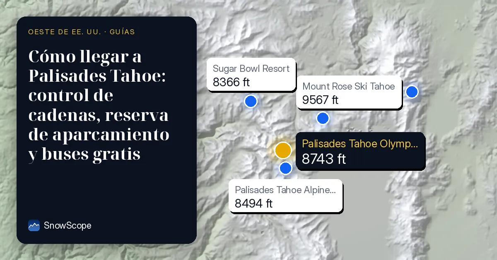

Cómo llegar a Palisades Tahoe: control de cadenas, reserva de aparcamiento y buses gratis
Palisades Tahoe Olympic Valley, en la costa noroeste del lago Tahoe, atrae a esquiadores de Reno, Sacramento y el área de la Bahía. Tu viaje invernal depende de dos cosas: las normas de control de cadenas de California cuando nieva, y las reservas de aparcamiento que el centro requiere los fines de semana y festivos concurridos.
Consulta la previsión de nieve en tiempo real de Palisades Tahoe Olympic Valley en la app SnowScopeEspesor de nieve, alertas de nieve polvo y mapa 3D, gratis.

Tres horas desde la ciudad aeroportuaria más cercana
Reno es la puerta de entrada más cercana: aproximadamente 42 millas (68 km) al suroeste. Sacramento está a 96 millas (154 km) al oeste, y San Francisco a 196 millas (315 km) más. The Village at Palisades Tahoe está en 1960 Olympic Valley Road; la base de Alpine Meadows tiene su propia entrada en Alpine Meadows Road. La mayoría de conductores cruzan Donner Summit, donde el tráfico invernal se ralentiza mucho en días de tormenta.
El tiempo de conducción desde Reno suele ser de unas tres horas en condiciones despejadas, pero la nieve y los puntos de control de cadenas pueden duplicarlo. Sal temprano el día del pronóstico y comprueba Caltrans QuickMap para conocer el estado de las carreteras, cierres y controles de cadenas antes de partir.

Qué significan R-1, R-2 y R-3 cuando nieva
Caltrans publica los niveles de control de cadenas en señales al borde de la carretera cuando llega la nieve. R-0 significa sin controles. R-1 requiere cadenas en todos los vehículos excepto turismos y camionetas ligeras menores de 6.000 lb que tengan neumáticos de nieve en al menos dos ruedas motrices; esos vehículos deben llevar cadenas en el coche. R-2 significa cadenas o dispositivos de tracción en todos los vehículos excepto aquellos con tracción total o integral y neumáticos de nieve en las cuatro ruedas, que deben tener dispositivos en el vehículo. R-3 requiere cadenas en todos los vehículos sin excepciones; las carreteras suelen cerrarse antes de que se publique R-3.
Las señales y el personal de Caltrans o CHP en el punto de control tienen la palabra final. Los reportes de radio pueden atrasarse respecto a las condiciones reales. En días de nieve abundante, los camiones se detienen o se rechazan en los puntos de control, lo que retrasa todo el tráfico detrás de ellos. Deja tiempo extra en tu horario los días de tormenta.
Antes de partir: comprobaciones de carreteras y sincronización
Caltrans QuickMap es la fuente oficial para controles de cadenas, cierres y condiciones actuales en SR-80 y otras rutas de montaña. Compruébalo antes de salir de casa, y vuelve a comprobar desde la carretera si el viaje tarda más de lo esperado. En días concurridos de polvo fresco, las colas del punto de control pueden extenderse millas, especialmente si sigue nevando.
Sal temprano: no por comodidad, sino para evitar quedarte atrapado en una cola lenta o enfrentarte a un cierre que te deje varado durante la noche. Si ves que ya se ha publicado R-2 o superior, considera si el día vale la pena el viaje.
Aparcamiento: reserva con antelación o usa los autobuses gratuitos
Las reservas de aparcamiento son obligatorias los sábados, domingos y todos los períodos festivos. El centro ofrece plazas gratuitas y de pago, pero debes reservar antes de llegar. Los fines de semana concurridos sin reserva, no encontrarás plaza.
Existen alternativas gratuitas. Tahoe Area Regional Transit (TART) opera autobuses gratuitos cada día desde Truckee y Tahoe City a Olympic Valley. The Mountaineer, un servicio de lanzadera bajo demanda gratuito, conecta diferentes partes del valle. En un día de tormenta cuando el viaje es estresante y el aparcamiento está lleno, el autobús resuelve ambos problemas: te saltas la cola del punto de control y el aparcamiento.
Patrones de nieve a lo largo de la temporada
Palisades Tahoe está en una cordillera donde la nieve es fiable pero varía mes a mes. A media montaña (7.470 ft / 2.277 m) el pico típico de la temporada es de aproximadamente 80 cm (202 cm), con nieve en el suelo aproximadamente 190 días de un invierno medio. Noviembre suele traer poca nieve en la base pero hasta 126 cm más arriba en uno de cada diez inviernos. Diciembre y enero traen acumulación más abundante, y marzo es el mes más profundo en general.
Históricamente la mejor semana es la semana 10 (principios de marzo), cuando media montaña tiene una profundidad mediana de aproximadamente 163 cm en nueve de cada diez inviernos. El invierno pasado (2025–26) alcanzó 166 cm a media montaña con 120 días de nieve. Al principio de la temporada, la cobertura de nieve puede ser delgada y secciones rocosas pueden asomar; las rocas enterradas bajo nieve superficial son un peligro.
Seguridad ante aludes cuando dejas el centro
Si planeas esquiar o hacer senderismo fuera del límite del centro, consulta primero el pronóstico de aludes de la zona de Tahoe. El portal avalanche.org publica pronósticos diarios. Incluso las incursiones fuera de pista cortas requieren un transceptor de alud, sonda y pala, y los conocimientos para usarlos. Nunca vayas solo, y nunca sin comprobar el boletín.
Consejos para esquiadores
- Comprueba Caltrans QuickMap y el pronóstico del tiempo antes de salir de casa. Los días de tormenta, sal muy temprano o quédate en casa.
- Lleva cadenas incluso si tienes tracción total: los controles R-2 las requieren en el coche.
- Reserva plazas de aparcamiento con antelación para fines de semana y festivos. Sin una, no encontrarás espacio.
- Usa el autobús gratuito TART desde Truckee o Tahoe City si el pronóstico muestra nieve abundante. Evita tanto la cola del punto de control como el aparcamiento.
- Antes de ir fuera de pista, lee el pronóstico de aludes de Tahoe y ve con otros que tengan el equipo y la formación adecuados.
Sobre estas cifras
Los espesores de nieve de las estaciones son la nieve más profunda en las pistas altas en la fecha indicada; son estimaciones para una zona, no una medida en un punto. Las previsiones pueden cambiar. Consulta siempre el boletín oficial de aludes antes de salir fuera de pista.
Boletines oficiales de aludes: avalanche.org (US national portal)
Citar este informe
Para investigación, docencia o prensa: cifras y gráficos reutilizables libremente bajo CC BY 4.0 con esta cita.
SnowScope (2026), Cómo llegar a Palisades Tahoe: control de cadenas, reserva de aparcamiento y buses gratis, https://snowscope.app/blog/es/2026/11/how-to-get-to-palisades-tahoe-chain-controls-parking.html, consultado el 2026-11-09
SnowScope (Atlas Labs). (2026, November 9). Cómo llegar a Palisades Tahoe: control de cadenas, reserva de aparcamiento y buses gratis. SnowScope snow reports. https://snowscope.app/blog/es/2026/11/how-to-get-to-palisades-tahoe-chain-controls-parking.html
BibTeX
@misc{snowscope2026howtogettopalisadestahoe,
author = {{SnowScope (Atlas Labs)}},
title = {Cómo llegar a Palisades Tahoe: control de cadenas, reserva de aparcamiento y buses gratis},
year = {2026},
month = nov,
howpublished = {\url{https://snowscope.app/blog/es/2026/11/how-to-get-to-palisades-tahoe-chain-controls-parking.html}},
note = {Published 2026-11-09 18:01 UTC; accessed 2026-11-09}
}· CC BY 4.0 · Métodos, datos y herramientas →
Sigue Palisades Tahoe Olympic Valley
Gratis: un aviso cuando llega la nieve y la previsión cada mañana.
Más partes de nieve

Unas 109 in (276 cm) es el pico habitual de Alta a media montaña en 46 inviernos pasados. Aquí: por qué el snowboard se queda en casa, los mejores meses y cómo subir el cañón.

Vail en cifras: un pico habitual de unas 64 in (162 cm) a media montaña en 46 inviernos pasados, marzo el mes más nevado, más terreno, acceso y seguridad.

Planifica Mammoth Mountain por temporada: unas 93 in (235 cm) de pico habitual a media montaña en 46 inviernos pasados, marzo el más nevado, primaveras largas e inviernos variables.